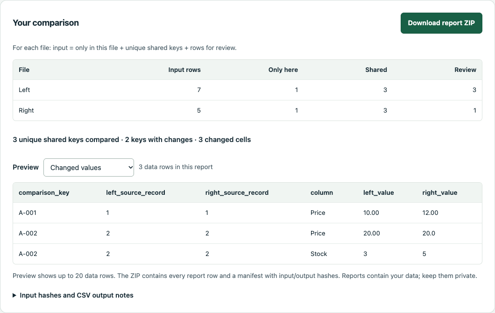

Compare CSV exports.
Keep ambiguous rows in view.
Choose two exports and a comparison key. See which keys occur in only one file, hold blank or duplicate keys for review, and compare the value columns you select.
Choose the rules
Exact keys and exact selected values. UTF-8 CSVs, up to 2 MiB and 50,000 data records per file.
Review before changing data
Every row in an ambiguous key group goes to review. Shared keys alone do not establish identity.
Keep the reports
Download CSV reports and a manifest of source/output hashes. Your original files are not modified.

Want the comparison handled for you?
The optional CSV comparison pilot has an indicative A$40 total price for two non-sensitive UTF-8 CSV files, up to 1,000 combined data rows and 200 KB combined.
Start with row counts, column headers, a comparison key and any value columns to check. Scope, availability, turnaround and payment are agreed before an order. Please wait for agreement before sending files. Files and results use email and an AI-assisted processing workflow.
View pilot terms and request a quote
Running Local Row Check yourself is free.
GitHub serves this page and the tool file and logs page visits. The comparison code processes chosen CSV files in your browser and makes no file upload or analytics requests. Download the standalone HTML for use without a network connection.
The browser edition was exercised in Chrome on macOS. Other browsers and physical phones remain untested. The guide records the checks and deliberate limits.